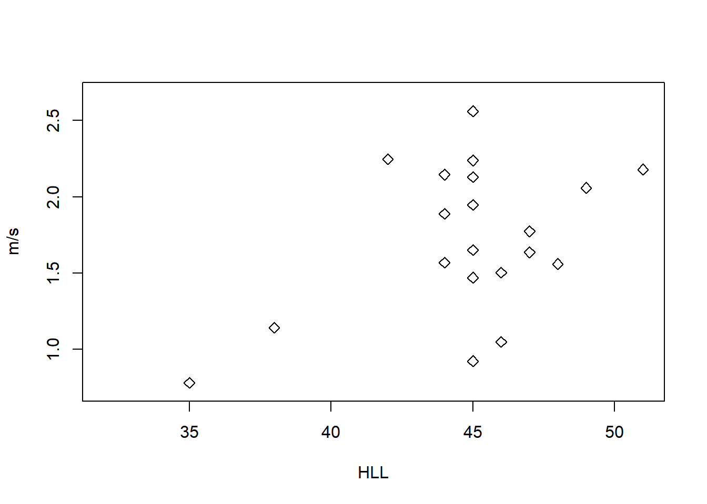

Chapter 3 Introduction
## Loading required package: carData## Registered S3 methods overwritten by 'lme4':
## method from
## cooks.distance.influence.merMod car
## influence.merMod car
## dfbeta.influence.merMod car
## dfbetas.influence.merMod car## lattice theme set by effectsTheme()
## See ?effectsTheme for details.## Loading required package: mvtnorm## Loading required package: survival## Loading required package: TH.data## Loading required package: MASS##
## Attaching package: 'TH.data'## The following object is masked from 'package:MASS':
##
## geyser## -- Attaching packages ------------------------------------------------------------------------------------------------------------ tidyverse 1.2.1 --## v tibble 2.1.3 v purrr 0.3.2
## v tidyr 0.8.3 v dplyr 0.8.3
## v readr 1.3.1 v stringr 1.4.0
## v tibble 2.1.3 v forcats 0.4.0## -- Conflicts --------------------------------------------------------------------------------------------------------------- tidyverse_conflicts() --
## x tidyr::extract() masks pastecs::extract()
## x dplyr::filter() masks stats::filter()
## x dplyr::first() masks pastecs::first()
## x dplyr::lag() masks stats::lag()
## x dplyr::last() masks pastecs::last()
## x dplyr::recode() masks car::recode()
## x dplyr::select() masks MASS::select()
## x purrr::some() masks car::some()3.1 Import data
Import tick data
## Observations: 51
## Variables: 13
## $ ï..Site <fct> R, R, R, R, R, R, R, R, R, C, C, C, C, C, C...
## $ Sex <fct> M, M, M, M, M, M, M, M, M, M, M, M, M, M, M...
## $ SVL <int> 46, 66, 68, 55, 65, 63, 58, 64, 62, 64, 71,...
## $ TL <int> 69, 93, 99, 80, 49, 96, 90, 100, 66, 89, 74...
## $ HLL <int> 35, 44, 46, 40, 44, 46, 39, 44, 42, 42, 50,...
## $ Mass <dbl> 3.25, 10.00, 10.75, 5.75, 9.00, 9.50, 7.25,...
## $ Ticks <int> 0, 0, 0, 0, 0, 0, 0, 0, 0, 0, 0, 0, 0, 0, 0...
## $ Max_25cm <dbl> 2.070, 2.849, 2.687, 2.655, 2.652, 2.668, 2...
## $ Max_2m <dbl> 1.830, 1.934, 1.886, 1.839, 1.985, 1.783, 1...
## $ Yes1N0 <int> 0, 0, 0, 0, 0, 0, 0, 0, 0, 0, 0, 0, 0, 0, 0...
## $ Residuals_Mass_OLS <dbl> -0.01090481, -0.68025639, -0.67219155, -0.8...
## $ Log_SVL <dbl> 1.662758, 1.819544, 1.832509, 1.740363, 1.8...
## $ Log._Mass <dbl> 0.5118834, 1.0000000, 1.0314085, 0.7596678,...3.1.1 Raw data table
| ï..Site | Sex | SVL | TL | HLL | Mass | Ticks | Max_25cm | Max_2m | Yes1N0 | Residuals_Mass_OLS | Log_SVL | Log._Mass |
|---|---|---|---|---|---|---|---|---|---|---|---|---|
| R | M | 46 | 69 | 35 | 3.25 | 0 | 2.070 | 1.830 | 0 | -0.0109048 | 1.662758 | 0.5118834 |
| R | M | 66 | 93 | 44 | 10.00 | 0 | 2.849 | 1.934 | 0 | -0.6802564 | 1.819544 | 1.0000000 |
| R | M | 68 | 99 | 46 | 10.75 | 0 | 2.687 | 1.886 | 0 | -0.6721915 | 1.832509 | 1.0314085 |
| R | M | 55 | 80 | 40 | 5.75 | 0 | 2.655 | 1.839 | 0 | -0.8496130 | 1.740363 | 0.7596678 |
| R | M | 65 | 49 | 44 | 9.00 | 0 | 2.652 | 1.985 | 0 | -1.3092888 | 1.812913 | 0.9542425 |
| R | M | 63 | 96 | 46 | 9.50 | 0 | 2.668 | 1.783 | 0 | -0.0673537 | 1.799341 | 0.9777236 |
3.1.2 Plot raw data
